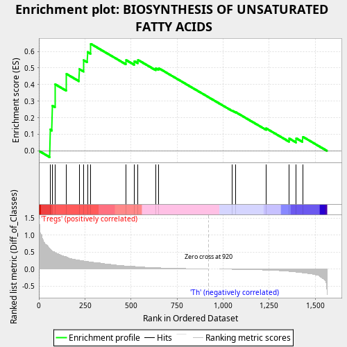
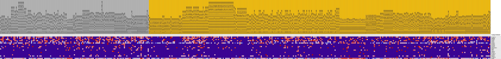
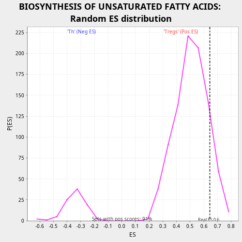

| | | Dataset | expr.pheno.cls#Tregs_versus_Th |
| Phenotype | pheno.cls#Tregs_versus_Th |
| Upregulated in class | Tregs |
| GeneSet | BIOSYNTHESIS OF UNSATURATED FATTY ACIDS |
| Enrichment Score (ES) | 0.64525115 |
| Normalized Enrichment Score (NES) | 1.2711036 |
| Nominal p-value | 0.1222467 |
| FDR q-value | 0.797564 |
| FWER p-Value | 1.0 |
Table: GSEA Results Summary

Fig 1: Enrichment plot: BIOSYNTHESIS OF UNSATURATED FATTY ACIDS
Profile of the Running ES Score & Positions of GeneSet Members on the Rank Ordered List
| PROBE | DESCRIPTION
(from dataset) | GENE SYMBOL | GENE_TITLE | RANK IN GENE LIST | RANK METRIC SCORE | RUNNING ES | CORE ENRICHMENT | | 1 | ELOVL5 | na | | | 60 | 0.590 | 0.1287 | Yes |
| 2 | HADHA | na | | | 71 | 0.533 | 0.2734 | Yes |
| 3 | ACAA1 | na | | | 87 | 0.486 | 0.4017 | Yes |
| 4 | TECR | na | | | 149 | 0.358 | 0.4639 | Yes |
| 5 | PECR | na | | | 218 | 0.260 | 0.4936 | Yes |
| 6 | ACOX1 | na | | | 242 | 0.239 | 0.5465 | Yes |
| 7 | ACOX3 | na | | | 263 | 0.221 | 0.5963 | Yes |
| 8 | ACOT4 | na | | | 281 | 0.211 | 0.6453 | Yes |
| 9 | ACOT2 | na | | | 473 | 0.091 | 0.5475 | No |
| 10 | HSD17B12 | na | | | 518 | 0.077 | 0.5408 | No |
| 11 | BAAT | na | | | 538 | 0.069 | 0.5481 | No |
| 12 | SCD | na | | | 634 | 0.040 | 0.4981 | No |
| 13 | FADS2 | na | | | 651 | 0.037 | 0.4982 | No |
| 14 | ACOT1 | na | | | 1050 | -0.007 | 0.2428 | No |
| 15 | ELOVL2 | na | | | 1069 | -0.008 | 0.2333 | No |
| 16 | ACOT7 | na | | | 1234 | -0.030 | 0.1360 | No |
| 17 | FADS1 | na | | | 1360 | -0.068 | 0.0745 | No |
| 18 | ELOVL6 | na | | | 1398 | -0.088 | 0.0757 | No |
| 19 | SCD5 | na | | | 1433 | -0.111 | 0.0853 | No |
Table: GSEA details [plain text format]

Fig 2: BIOSYNTHESIS OF UNSATURATED FATTY ACIDS
Blue-Pink O' Gram in the Space of the Analyzed GeneSet

Fig 3: BIOSYNTHESIS OF UNSATURATED FATTY ACIDS: Random ES distribution
Gene set null distribution of ES for BIOSYNTHESIS OF UNSATURATED FATTY ACIDS